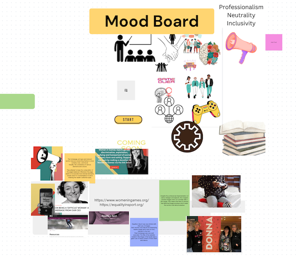
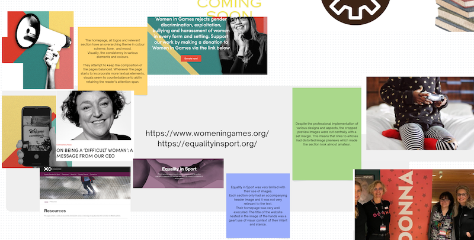
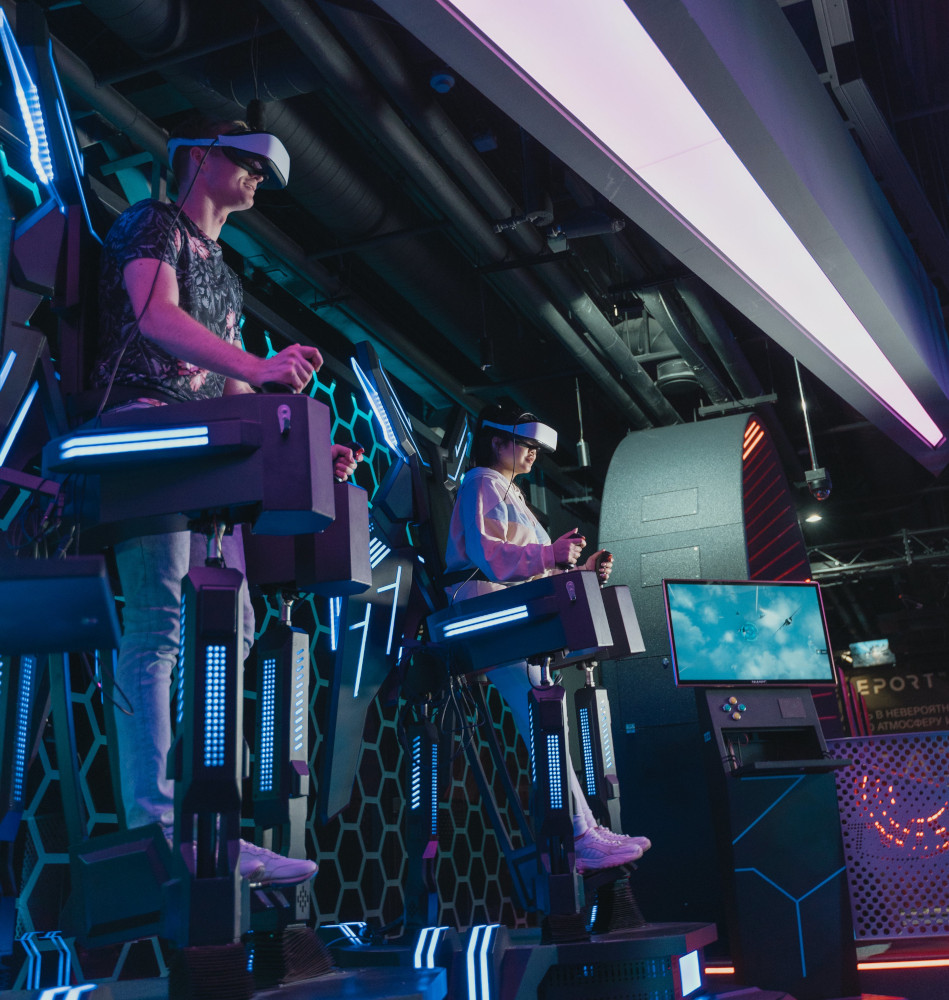
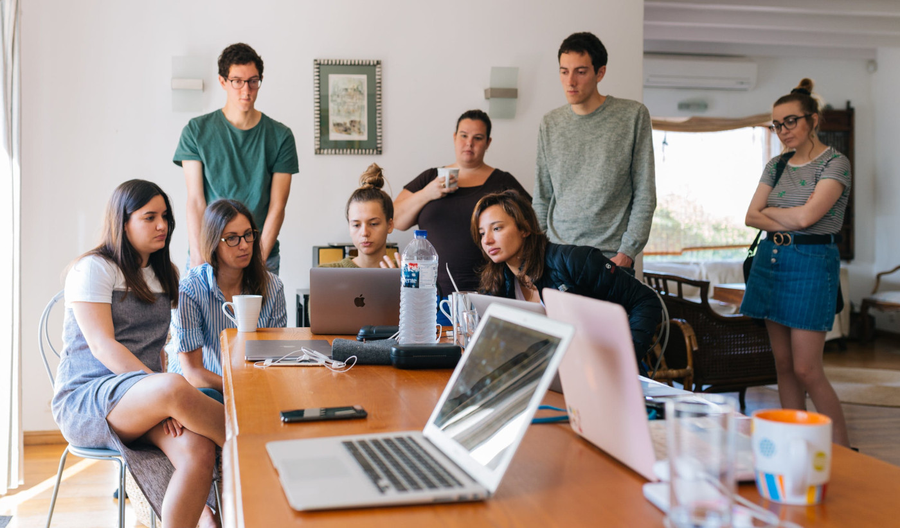
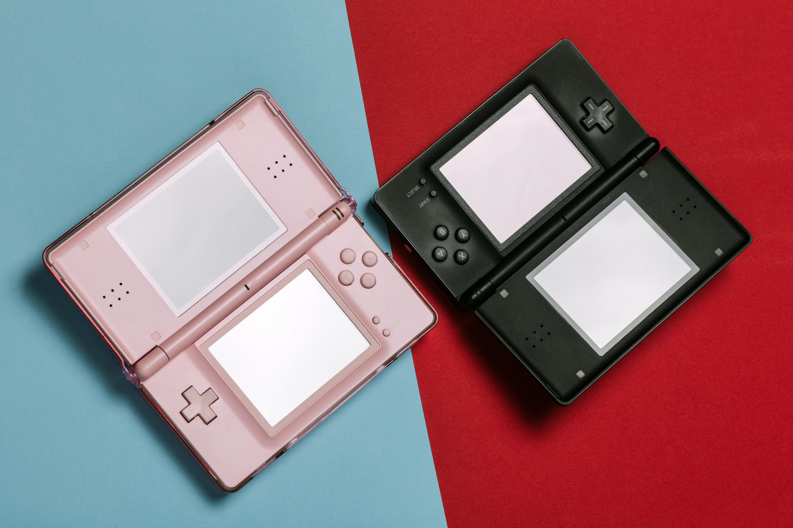
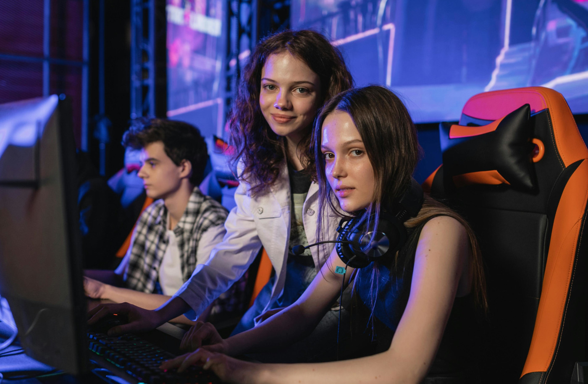
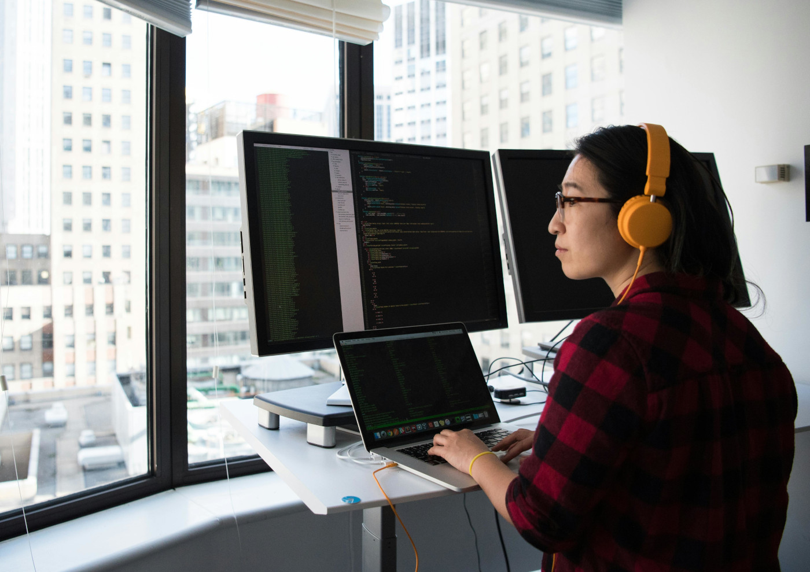
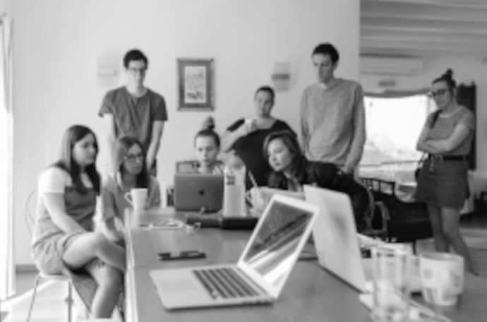
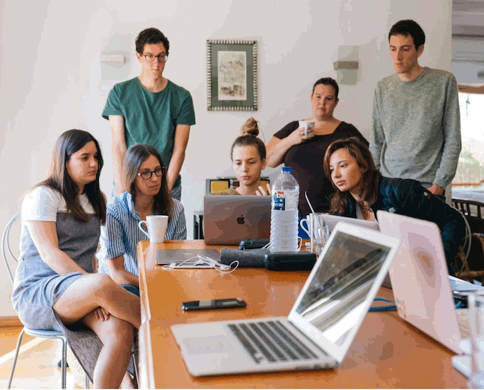

Week 7
IL Activity 7
Task 1:
I belive I have not had a proper Heureka moment yet. I might have had a slight feeling of epiphany as I was going through my sources and attempting to come up with a sensible structure for the website. I have plateaued at brainstorming and experimentation in hopes of 'incubating' a website with real life impact.
Through the lab tasks and IL activities, I was forced to make a moodboard which did get me thinking in a more creative direction and the visual elements accompanying the information I will be attempting to share with my audience. The moodboard served as a basis of visual characterisstics or tone I could employ. Afterwards, I analysed how different developers use webdesign to aid the primary purpose of their website. Often, if the website was more of an educational resource relying on delivering some knowledge, the design was consistent but subtle. None of the visual elements were so overwhelming as to distract the user and perhaps distract the flow of indormation. Their design was very consistent and not overly drmatic in colours or images. All design decisions seem to have a rational justification for their use. Colours can symbolise, logos and images are leading the user either throughout the website or back to the organisation or entity owning the website.
My evaluation has mainly come from the lab task where I note down my findings and thoughts and reflect over what I have learnt.
The implementation stage has been very limited thus far. I can say that I have a clear vision, howver, to ge there, I will need to conduct much more reserach, find real-life examples and incorporate them in a way that is suitable to my theme, vision and rhetoric.
Task 2:
https://www.womeningames.org/


The images seem to be supporting an aesthetic vision which reinforced the professional nature of the website.
However, some of the images (as seen in the moodboard below), some might interpret the visual aspects as symbols for left-wing or socialist propaganda.
Despite this, the hand gestures are symbolic of feminism, which only reinforces the purpose of the website. The intent would perhaps be to retain an audience of educated and infromed women or other people interested in the movement.
The images aid in text comprehension through symbolic objects (e.g. mogaphone) referrring to accompanying text or titles.
I belive there to be a combination of raster and vector images.
Photographes and preview images seem to be all vector files, whilst reappearing images and emoticons are raster.
This combination appears to be very well executed. The raster images are of high quality and their appearnace only complements the whole visual aesthetic of the website (ie. retro and black & white). the photographs are vector images to best represent the originals.








Lab Task 3:


Reflection:
The first greyscale image would fall between 2-3. It is definitely good enough and okay for web use but would not be appropriate for print. I would not necessarily use greyscale unless your entire page is in white and black only. Using a singular greyscale image looks unprofessional with inconsistent design practices.
The indexed image would be around 4-5. It is usable in certain circumstances. If you are going for a retro visual aesthetic, then indexed images might be usuable. Unfortunately, for regular web use, I would not deem them usable.
The third image would be a 3 and the next two images would receive a 2. I did not necessarily see a difference without zooming in and even then, it was barely noticable. The differnec in ppi would show up more when printing but anything larger than 72 ppi is not necessary when using quite smal omptimised images for web use. Smaller ppis would be okay for smaller preview images or icons.
Optimisation is great for having a web page that works well across all devices, is fast and provides you with resources you're looking for that you can actually use. Using 72 ppi images is enough for a text heavy website. I will also stick to coloured images as I believe using greyscale is not a good fit for my topic or design choices.